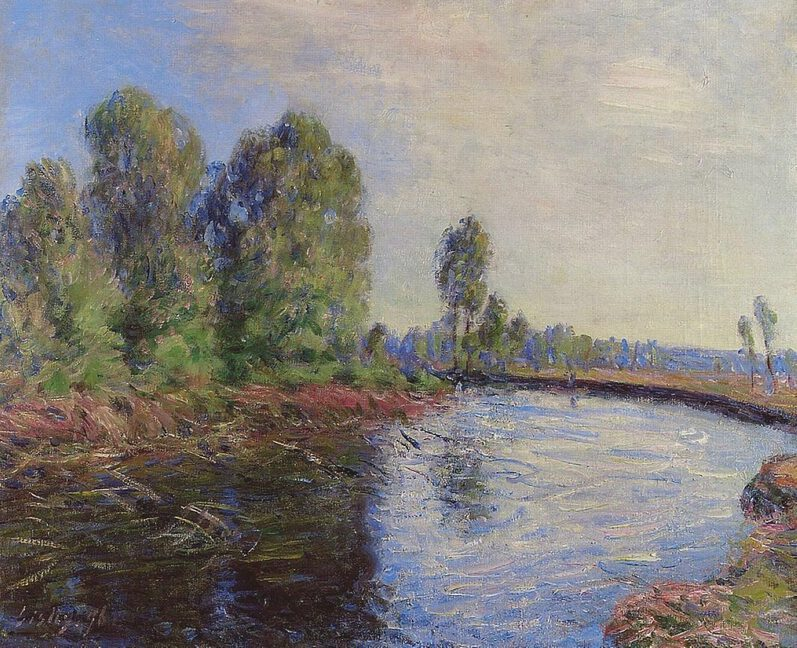

Alfred Sisley,1839 - 1899,Impressionism,"French,British","Alfred Sisley (; French: [sislɛ]; 30 October 1839 – 29 January 1899) was an Impressionist landscape painter who was born and spent most of his life in France, but retained British citizenship. He was the most consistent of the Impressionists in his dedication to painting landscape en plein air (i.e., outdoors). He deviated into figure painting only rarely and, unlike Renoir and Pissarro, found that Impressionism fulfilled his artistic needs.",http://en.wikipedia.org/wiki/Alfred_Sisley,259
